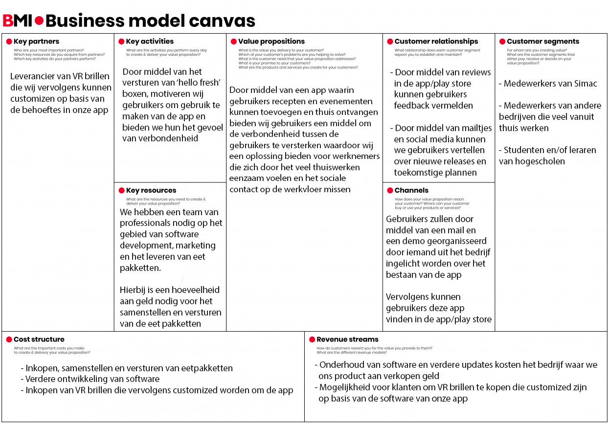
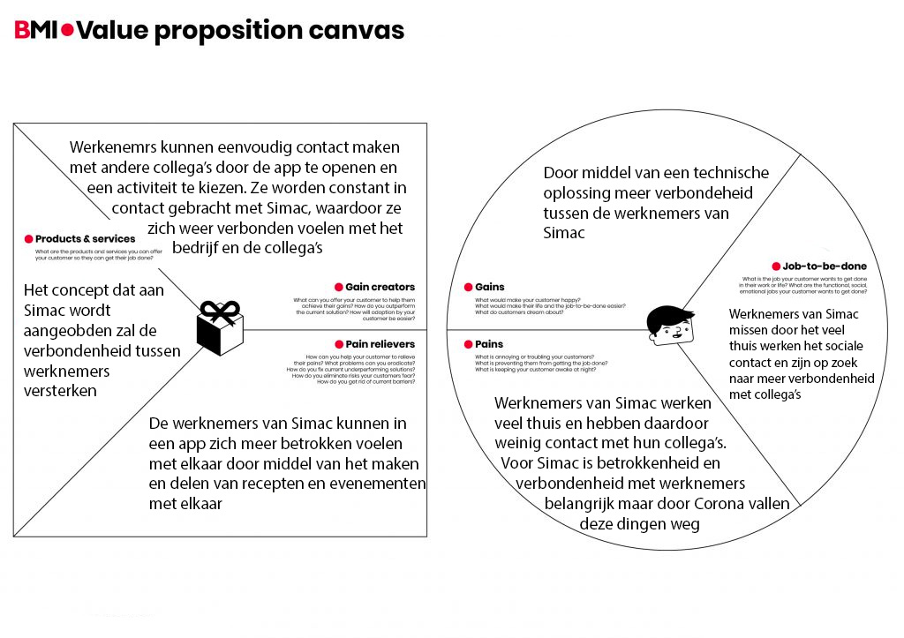

Business modal & value proposition canvas
Met een Business Model Canvas wordt gekeken waar de kracht en kansen liggen van ons concept. Het doel hiervan is het visueel en overzichtelijk weergeven van de bedrijfsstrategie voor de Simac app.
Als groep hebben we afgesproken om individueel een Business Model Canvas te maken. Deze zullen we vervolgens langs elkaar leggen en bespreken om tot een definitief business model te komen. Ik ben met behulp van de BMI website aan de slag gegaan met het maken van een business model voor de Simac app. Daarnaast heb ik met dezelfde bron ook een value proposition canvas gemaakt om een nog duidelijker beeld te krijgen over de gebruikers/klanten van de Simac app.
In de onderstaande afbeelding is mijn individuele gemaakte Business Model Canvas te zien (klik om te vergroten).
{kind=link}
In de volgende afbeelding is mijn individuele gemaakte value proposition canvas te zien (klik om te vergroten).
Uiteindelijk hebben we een gezamenlijk Business Model Canvas gemaakt door alle individuele modellen te bespreken en samen te voegen. Dit model dient als uitgangspunt voor de bedrijfsstrategie. Het gezamenlijke Business Model Canvas is te zien in
Business model canvas (z.d.). Geraadpleegd op 21 april 2021, van
https://www.businessmodelsinc.com/nl/over-bmi/business-design-tools/business-model-canvas/
Value proposition canvas (z.d.). Geraadpleegd op 29 april 2021, van
https://www.businessmodelsinc.com/about-bmi/tools/value-proposition-canvas/